18/12/2019 — Đau ngực ở bệnh nhân nguy cơ cao. Đây có phải sóng T tối cấp? Chuyện gì đang xảy ra?
Bản dịch tiếng Việt của bài "Chest pain in high risk patient. Are these Hyperacute T-waves? What is going on here?" – Dr. Smith’s ECG Blog. Giữ nguyên toàn bộ 13 hình ảnh của bản gốc.
Một phụ nữ 40 mấy tuổi có tiền sử béo phì, rối loạn lipid máu, hút thuốc lá, cùng với lạm dụng cocaine và rượu, đến viện vì đau ngực từng cơn trong 2-3 tuần, trở thành liên tục trong ngày gần nhất. Bệnh nhân cũng có mệt yếu toàn thân. Có kèm khó thở (SOB), nhưng không buồn nôn và nôn.
Đây là điện tâm đồ ban đầu:

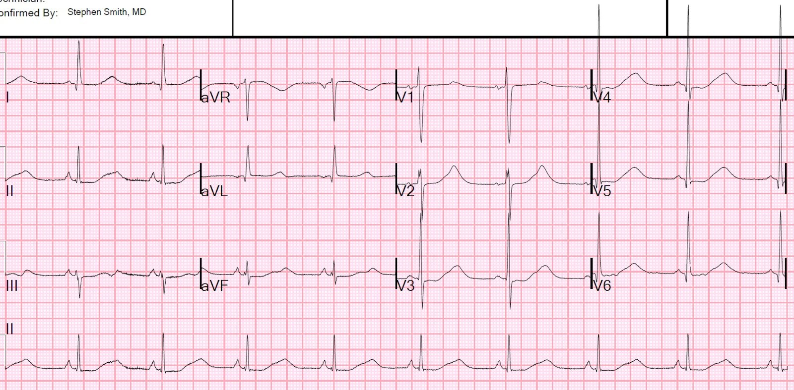
Có nhịp xoang, ST chênh xuống nhẹ (II, aVF, III, V2-V6) và các sóng T có vẻ rất rộng và lớn. Tuy nhiên, nếu nhìn kỹ, ta thấy một sóng U rõ rệt và nổi bật ở các chuyển đạo II, III, aVF. Dù là sóng T hay sóng U, khoảng (QT hoặc QU) đều rất dài. Tôi đo được 700 ms. Máy tính đo khoảng QT là 450 ms và không đề cập tới sóng U.
Hãy nhìn V1 và V2:

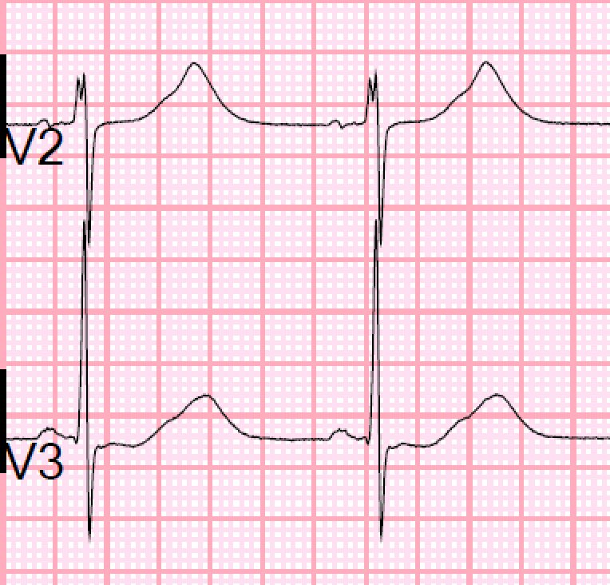
Bây giờ hãy để ý rằng có 2 cái bướu nhỏ xíu trong các sóng này. Tôi chỉ ra chúng ở phức bộ đầu tiên bằng các mũi tên sau:

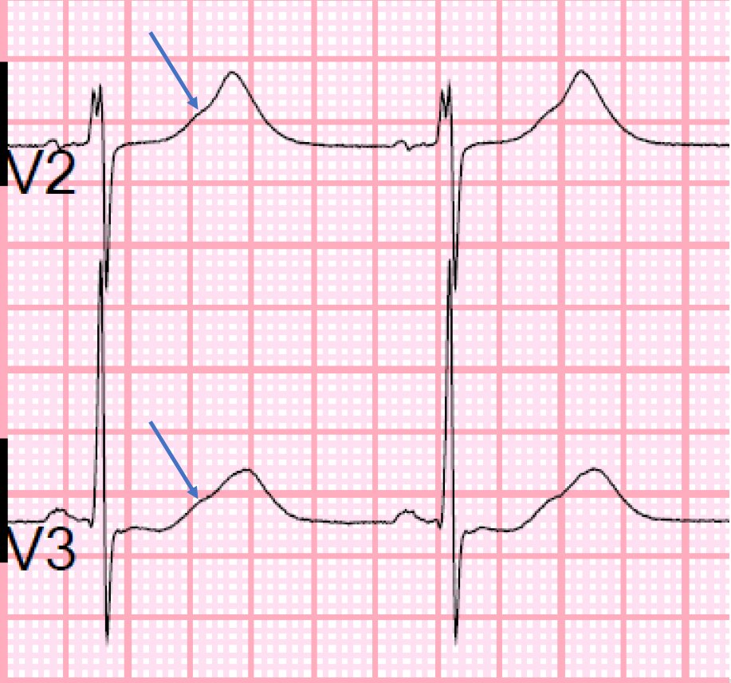
Ở đây tôi kẻ một đường màu xanh lam đi xuống từ các sóng U rõ ràng ở II và III tới chuyển đạo II ở dải dưới cùng (sóng U cũng rõ ở chuyển đạo aVF). Sau đó, tôi kẻ các đường màu đỏ từ cùng một phần của phức bộ QRSTU ở chuyển đạo II dải dưới cùng đi lên tới cùng phần đó của phức bộ QRS ở các chuyển đạo: (aVR, aVL, aVF), (V1-V3), (V4-V6).

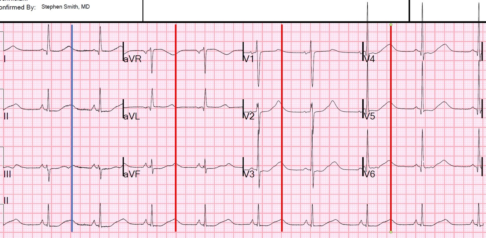
Có QT dài không? Hay chỉ có QU dài?
Khoảng QT có vẻ đo được ở chuyển đạo III.
Xem chuyển đạo III ở đây:

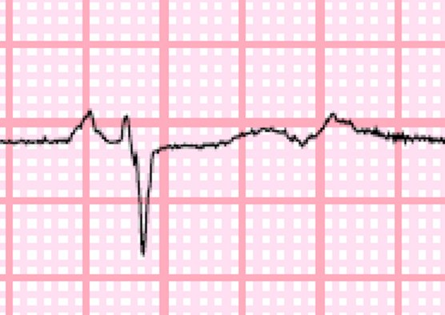

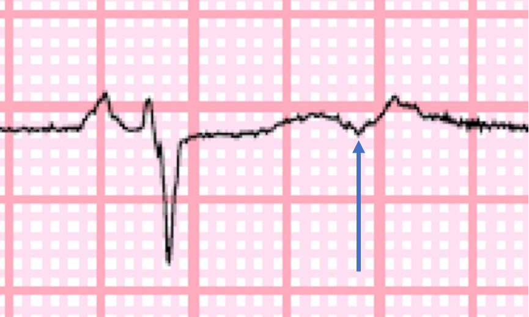
Khoảng QT là 480 ms, hơi dài, nhưng chưa tới mức nguy hiểm.
Như vậy, cái có vẻ là QT dài ở các chuyển đạo khác thực ra là QU dài!
Hóa ra, kali máu là 2.6 mEq/L.
Có một điện tâm đồ cũ để so sánh:

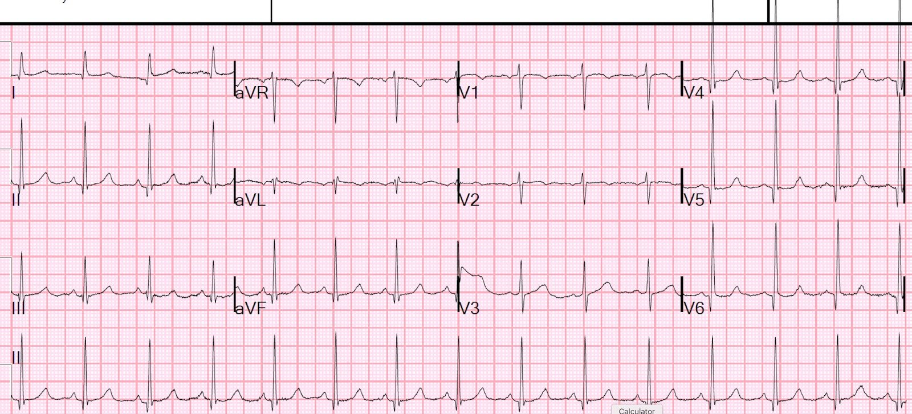
Ondansetron được dùng để trị buồn nôn và nôn SAU điện tâm đồ ban đầu này.
Đây là 2 điện tâm đồ nữa được ghi trước khi kali được bù đủ:

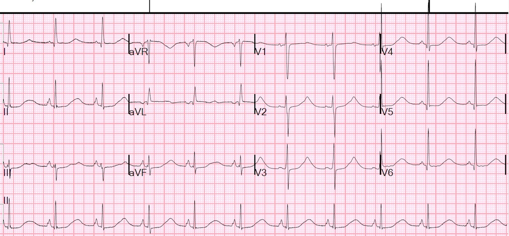

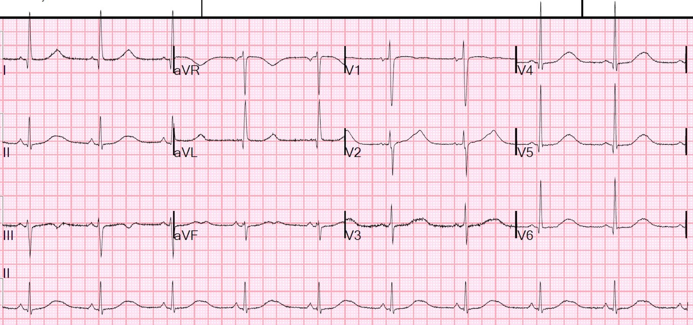
Máy tính không đề cập gì tới sóng U Một lần nữa, “QT” thực ra là sóng QU. Sóng U vẫn nổi bật, và một lần nữa, tôi đo khoảng QU rất dài, 640 ms Máy tính đo QT và QU rất tệ!
–Không có điện tâm đồ nào được ghi sau khi kali được bù lên 4.1 mEq/L. Không có điện tâm đồ nào được ghi để xác nhận khoảng QT/QU đã trở về bình thường.
–QU dài đã không được nhận ra là QU dài.
–“QT dài” được cho là một phần do ondansetron, nhưng thuốc này được dùng SAU điện tâm đồ đầu tiên.
Bệnh nhân được loại trừ nhồi máu cơ tim bằng troponin xét nghiệm nhiều lần.
Phát hiện bệnh nhân đang dùng methadone, và tôi lo rằng đây có thể là tác dụng của methadone, nên chúng tôi đã liên lạc với bệnh nhân để ghi một điện tâm đồ khác khi kali bình thường. Đây là điện tâm đồ đó:

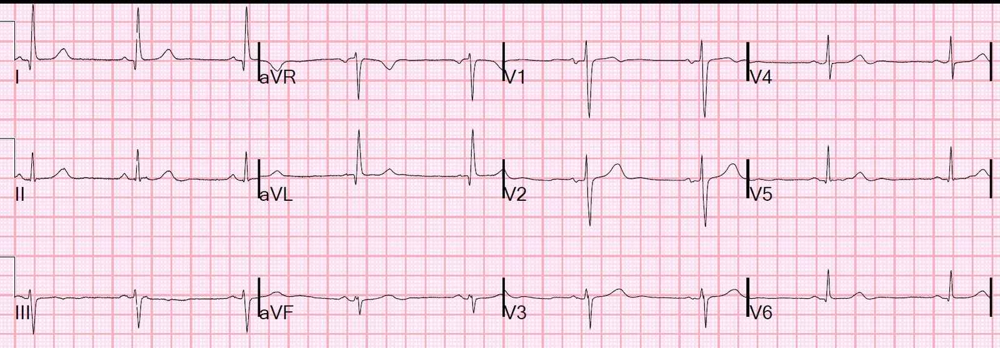
Như vậy, QU dài nhiều khả năng hoàn toàn là do hạ kali máu.

===================================
BÌNH LUẬN CỦA TÔI, bởi KEN GRAUER, MD (18/12/2019):
===================================
Chúng tôi đã thấy hình ảnh xuất hiện trên điện tâm đồ ban đầu của ca này ( = Điện tâm đồ #1 trong Hình 1) — không chỉ vài lần trước đây trên Dr. Smith’s ECG Blog. “Hình ảnh” mà tôi muốn nói tới là như sau:
- Bệnh nhân là “đối tượng dễ mắc” (set-up) rối loạn điện giải (đáng chú ý nhất là nồng độ thấp trong huyết thanh của K+ và/hoặc Mg++) — do dinh dưỡng kém, bỏ bê bản thân, buồn nôn/nôn gần đây; hạ thân nhiệt, và quá thường gặp là do lạm dụng rượu. “Mệt yếu” toàn thân thường nổi bật trong bệnh sử gần đây.
- Điện tâm đồ cho thấy bất thường ST-T lan tỏa — thường dưới dạng ST-T dẹt và/hoặc chênh xuống, đôi khi kèm một ít sóng T đảo ngược.
- QTc (hoặc khoảng QU) kéo dài rõ ràng.
- Sóng U nổi bật hiện diện ở nhiều chuyển đạo. Các sóng U này có thể dễ dàng nhìn thấy dưới dạng một “cái bướu” riêng biệt đi sau sóng T — hoặc sóng U có thể khó thấy hơn vì chúng hòa lẫn dần dần vào sóng T đi trước. Điểm MẤU CHỐT — với sự luyện tập tìm kiếm chúng — bạn thường sẽ có thể phát hiện những sóng U này làm biến dạng, hoặc ít nhất tạo ra một vết lõm trên sóng T đi trước. Hãy học cách nhận ra sóng U!

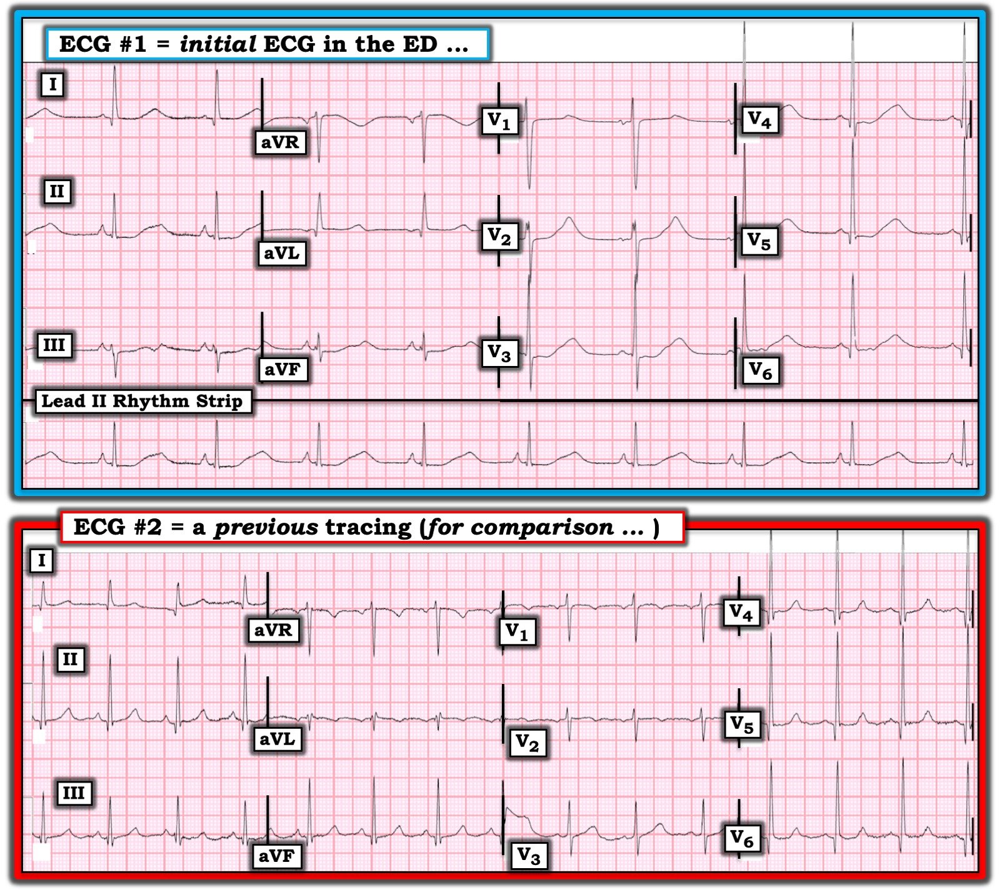
Tôi xin BỔ SUNG những suy nghĩ sau vào các nhận xét ở trên của Dr. Smith:
- “Quan điểm của tôi” về chủ đề Hạ Kali máu nằm trong phần Bình luận của tôi ở cuối Bài ngày 18 tháng Mười Một năm 2019 trên Dr. Smith’s ECG Blog. Nhiều nhận xét của tôi về ca hôm nay GIỐNG HỆT những gì tôi đã mô tả ngày 18 tháng Mười Một — vì vậy tôi sẽ dẫn chiếu tới bài đó ở đây.
- Cũng như ca ngày 18 tháng Mười Một — sóng U rõ rệt chỉ thấy ở 1 hoặc 2 chuyển đạo. Ở phần lớn các chuyển đạo, sóng U hòa vào phần cuối của sóng T đi trước — và vì thế có thể dễ bị bỏ sót. Do đó — điều quan trọng là luôn đánh giá cả 12 chuyển đạo khi cố xác định xem sóng U có thể đang ẩn trong các sóng T đi trước chúng hay không.
- ĐIỂM THEN CHỐT (PEARL) #1 của tôi trong Bài ngày 18 tháng Mười Một vẫn đúng với ca hôm nay. Trong hơn 30 năm kinh nghiệm theo dõi sát nồng độ điện giải liên tiếp ở những bệnh nhân như vậy — Mg++ huyết thanh rất thường cũng giảm khi có hạ kali máu. Tôi tin rằng Mg++ huyết thanh thấp gây ra các tác động lâm sàng (bao gồm mệt yếu) và thay đổi điện tâm đồ tương tự như hạ kali máu. Việc điều chỉnh K+ huyết thanh thấp có thể gặp khó khăn cho tới khi Mg++ huyết thanh cũng được điều chỉnh. Chúng ta không được cho biết nồng độ Mg++ huyết thanh trong ca này là bao nhiêu …
- ĐIỂM THEN CHỐT (PEARL) #2 của tôi trong Bài ngày 18 tháng Mười Một cũng vẫn đúng: Một số bệnh nhân hạ kali máu xuất hiện hình ảnh “giả P phế” (pseudo-P-pulmonale). Lưu ý rằng sóng P ở mỗi chuyển đạo thành dưới trên điện tâm đồ #1 (đặc biệt ở chuyển đạo II) — cao, nhọn và có đỉnh sắc. Hình ảnh sóng P này không có trên bản ghi trước đó ( = điện tâm đồ #2), được ghi khi K+ bình thường.
NHỮNG ĐIỂM KHÁC mà tôi muốn nêu:
- Tôi ngạc nhiên rằng kết quả đọc bằng máy tính trong ca này đã bỏ sót sóng U trên điện tâm đồ #1. Tôi ngờ rằng máy tính trong ca này đã dùng chuyển đạo III, hoặc có thể là chuyển đạo aVF để tính QTc. Dr. Smith và tôi đều (một cách độc lập) dùng chuyển đạo III — nhưng nếu máy tính chọn chuyển đạo aVF (xét tới nhịp chậm) thì sẽ cho ra giá trị QTc hiệu chỉnh gần với con số 450 msec được báo cáo. Theo kinh nghiệm của tôi — máy tính nhìn chung ước tính QTc khá tốt — vì đây là một giá trị được tính toán, và máy tính tính toán rất giỏi. Dù vậy — sai sót vẫn có thể xảy ra nếu máy tính chọn sai điểm dữ liệu cho điểm kết thúc của sóng T. ĐIỀU CỐT LÕI — Điều thiết yếu là luôn luôn kiểm soát lại những gì máy tính nói. Trên điện tâm đồ #1 phải thấy rõ ràng rằng hoặc khoảng QT và/hoặc khoảng QU kéo dài rõ rệt. Dấu hiệu QT (QU) dài này không được phép bị bỏ qua. Hãy LÙI LẠI vài inch, và nhìn điện tâm đồ #1 từ một khoảng cách ngắn. Rồi “khắc ghi vào não” hình ảnh mà ta thấy trên điện tâm đồ #1 về một khoảng QT (hoặc QU) dài không tương xứng.
ĐIỂM THEN CHỐT (PEARL) #3 — Cách dễ nhất để bảo đảm bạn không bao giờ quên đánh giá khoảng QT — là dùng một Cách tiếp cận Hệ thống khi đọc từng-và-mọi điện tâm đồ bạn gặp. Không tuân theo khuyến nghị này — chắc chắn bạn sẽ thỉnh thoảng quên những dấu hiệu điện tâm đồ quan trọng, chẳng hạn như kéo dài QTc. (Tôi minh họa việc dùng Cách tiếp cận hệ thống để đọc điện tâm đồ trong phần Bình luận của tôi ở cuối Bài ngày 28 tháng Sáu năm 2019 của SSmith).
- Một khi khoảng QT (hoặc QU) kéo dài đã được nhận ra — Hãy nhớ DANH SÁCH đơn giản mà tôi đã đề xuất trong Bài ngày 18 tháng Mười Một về các nguyên nhân gây QTc kéo dài. Ở một bệnh nhân có tiền sử như ca này — chẩn đoán giả định trên điện tâm đồ #1 (cho tới khi bạn chứng minh được điều ngược lại) nên là K+/Mg++ thấp.
NHỮNG ĐIỂM CUỐI CÙNG:
- Mặc dù khả năng thiếu máu cục bộ nên được đưa vào chẩn đoán phân biệt nguyên nhân gây ST-T dẹt/chênh xuống mà ta thấy trên điện tâm đồ #1 — nhưng xét tới tiền sử của bệnh nhân này, khoảng QT (hoặc QU) rất dài, và chẩn đoán giả định của chúng ta là K+/Mg++ thấp cho tới khi được chứng minh điều ngược lại — tôi sẽ không kích hoạt phòng thông tim (cath lab) vào thời điểm này. Lý do tôi nói vậy là vì ngay cả NẾU bệnh nhân này thực sự có hội chứng vành cấp — NẾU K+/Mg++ huyết thanh thấp tới mức nguy hiểm — thì việc thực hiện một thủ thuật xâm lấn như thông tim cấp cứu là không được khuyến cáo cho tới khi bạn đã cải thiện tình trạng điện giải huyết thanh. Trì hoãn một chút vì mục đích này cho phép: i) Có chút thời gian để xem cảm giác khó chịu ở ngực có giảm không, và các bất thường điện tâm đồ có bắt đầu được điều chỉnh khi bạn bù điện giải huyết thanh hay không; và, ii) Có cơ hội theo dõi sát bệnh nhân để đánh giá tốt hơn LIỆU đau ngực do tim mới khởi phát có thực sự là vấn đề chính hay không (Có vẻ như trong ca này thì không phải …).
- Bạn có để ý rằng tiêu chuẩn điện thế của LVH đều thỏa ở cả hai điện tâm đồ #1 và #2 không? Các sóng q nhỏ và hẹp cũng thấy ở nhiều chuyển đạo trên cả hai bản ghi. Những sóng q hẹp này ít có khả năng có ý nghĩa lâm sàng (nhiều khả năng chúng là sóng q “vách”, vốn cũng có thể thấy ở các chuyển đạo thành dưới khi trục mặt phẳng trán tương đối đứng, như trên điện tâm đồ #2).
- Điều đáng chú ý — So sánh điện tâm đồ #1 với bản ghi trước đó của bệnh nhân này, được ghi khi điện giải huyết thanh bình thường ( = điện tâm đồ #2) cho thấy: i) trước đây QTc bình thường; ii) Ngoài một sóng U có lẽ rất nhỏ ở chuyển đạo V2 — sóng U không có trên bản ghi trước đó; và, iii) ST-T dẹt và chênh xuống không thấy trên bản ghi trước đó. Những khác biệt này giữa điện tâm đồ #1 và bản ghi trước đó (nền) xác nhận rằng các thay đổi điện tâm đồ do mất cân bằng điện giải trên điện tâm đồ #1 là mới!
Chúng tôi xin CẢM ƠN Dr. Smith đã trình bày ca bệnh này!